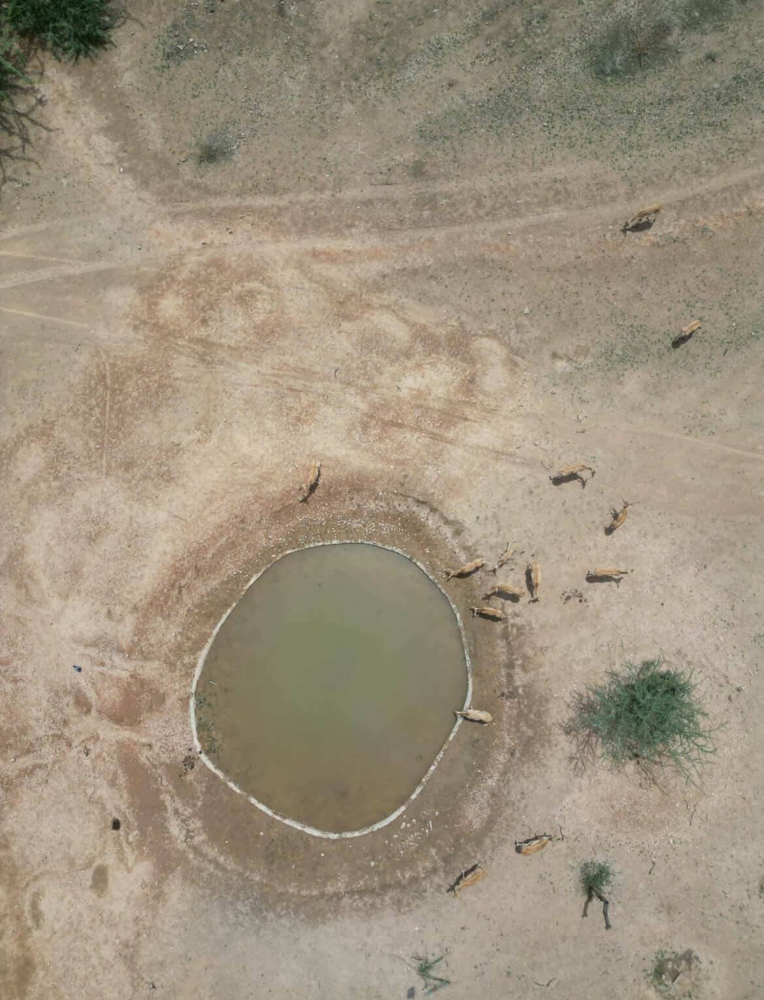

"There wasn't an injured great Indian bustard, chinkara or vulture that Radheshyam Bishnoi heard of that he wouldn't go out of his way to help. Bishnoi, 28, was a passionate conservationist, as good as they come. His work in and around the Thar desert in Rajasthan has been instrumental in protecting the lives and often-overlooked habitats of some of India's most vulnerable animals, particularly the critically endangered great Indian bustard (GIB)."
Radheshyam Bishnoi
The Godawan Man of India
Wildlife Conservationist, Protector of the Great Indian Bustard
1997 - 2025
Introduction
Radheshyam Pemani Bishnoi (1997-2025), widely known as the "Godawan Man of India," was a wildlife conservationist whose life was dedicated to protecting the critically endangered Great Indian Bustard (GIB) and preserving the rich biodiversity of the Thar Desert in Rajasthan, India.
Born into the environmentally conscious Bishnoi community in Dholiya village near Pokhran, Radheshyam embodied their 500-year tradition of wildlife protection from an early age. By 28, he had accomplished what many conservationists strive for in a lifetime—creating water reservoirs across the arid landscape, leading community conservation projects, documenting critical biodiversity data, initiating anti-poaching cases, and rescuing countless injured animals.
His tireless dedication earned him prestigious recognition, including the Sanctuary Wildlife Service Award (2021) under the Young Naturalist Category and appointment as a Mud-on-Boots Project Leader by the Sanctuary Nature Foundation. Tragically, his life was cut short during an anti-poaching mission on May 24, 2025, when his vehicle collided with a truck on National Highway 11 near Jaisalmer.
This comprehensive documentation chronicles the extraordinary life, achievements, and enduring legacy of Radheshyam Bishnoi—a true environmental hero whose impact on conservation will continue to inspire generations to come.

Radheshyam Bishnoi in his natural element—the Thar Desert
Early Life & Background
The Bishnoi Legacy
Born in 1997 in Dholiya village near Pokhran, Rajasthan, Radheshyam was raised in the Bishnoi community—a sect founded in the 15th century by Guru Jambheshwar, who established 29 principles (bish: 20, noi: 9) for living in harmony with nature. Several of these principles are specifically dedicated to protecting trees and wildlife, forming the foundation of what is considered the world's first environmental religion.
The Bishnoi are renowned for their environmental stewardship, most famously demonstrated in 1730 when Amrita Devi Bishnoi and 363 others sacrificed their lives to protect khejri trees from being cut down by the Maharaja of Jodhpur's men. This historic event, known as the Khejarli Massacre, is considered one of the earliest recorded instances of environmental activism and inspired the modern Chipko movement.
Growing up in this tradition, Radheshyam was immersed in a culture that reveres all forms of life. The Bishnoi community's practices—such as burying their dead instead of cremating them to save trees, providing food and water for wildlife, and protecting animals from hunters—shaped his worldview from an early age.
As noted by Martin Goodman in his book "My Head For A Tree: The Extraordinary Story of the Bishnoi, Guardians of Nature" (2025), the community's commitment to conservation is not just a practice but a sacred duty passed down through generations, creating a lineage of environmental guardians of which Radheshyam became a prominent modern representative.
Dholiya village, Radheshyam's birthplace, where his conservation journey began
Childhood & Formative Years
From his earliest years, Radheshyam displayed an unusual affinity for wildlife. Local accounts describe how, as a child, he would often be found rescuing injured birds and animals, bringing them home to nurse them back to health. His parents, traditional Bishnoi farmers, encouraged this compassion while teaching him the community's environmental principles.
Growing up in the harsh environment of the Thar Desert, Radheshyam witnessed firsthand the challenges faced by wildlife in this arid ecosystem. Water scarcity, habitat loss, and human-wildlife conflict were daily realities that shaped his understanding of conservation needs.
His formal education at the local village school was supplemented by practical knowledge passed down through generations of Bishnoi conservationists. By his teenage years, Radheshyam had already developed a reputation in neighboring villages as someone who could be called upon when injured wildlife was found.
In an interview with Natasha Rego of Hindustan Times in 2025, Radheshyam reflected on his early attempts at wildlife rescue: "I spent my childhood trying to rescue injured animals. But I could only save few of them." This frustration at his limited ability to help would later drive him to seek formal training in wildlife first aid and rehabilitation.
"The area I live in has taught me flexibility and the ability to adapt. Stray dogs, solar power infrastructure, poaching and encroachment can pose serious threats to the Thar. But I know change is possible for the Great Indian Bustard and all wildlife."
Key Achievements
By age 28, Radheshyam had accomplished what many conservationists strive for in a lifetime. His holistic approach to conservation addressed multiple threats facing the Thar Desert ecosystem and its flagship species, the Great Indian Bustard.
Water Reservoirs
Created and maintained over 100 water reservoirs across the Pokhran region, providing critical hydration for wildlife in the arid landscape. These water points were strategically placed along wildlife movement corridors and regularly refilled using his personal truck, even during border tensions.
As noted in Natasha Rego's article, "He also helped build over 100 watering holes across the Pokhran region, where chinkara and other wildlife can hydrate in the desert's punishing summer." Sumer Singh, a fellow conservationist, recalled how even during the India-Pakistan conflict, "When Jaisalmer was under a blackout and we were all scared, Bishnoi would go to the DNP every night in his truck, and refill water in the water holes he had dug for the wild animals in the summer."

Anti-Poaching Efforts
Initiated over 50 anti-poaching cases resulting in approximately 300 arrests. Developed an extensive network of informants including herders and farmers across the Thar Desert, creating an early warning system for poaching activities that threatened endangered species.
According to Hamza Khan's article in The Indian Express, "He also played a pivotal role in anti-poaching initiatives, providing information that led to the arrest of poaching gangs, apart from being instrumental in registration of several FIRs."
Sumit Dookia noted that "Over the last two years, these Godawan Friends have given information on more than 10 poaching cases. These were of the spiny-tailed lizard, chestnut-bellied sandgrouse, Indian fox, and of course, the chinkara."

Community Mobilization
Led the Godawan Community Conservation project, mobilizing local communities to protect the Great Indian Bustard. Conducted awareness programs in over 50 villages, transforming potential poachers into conservation allies and creating a grassroots movement for wildlife protection.
As described in Azera Parveen Rahman's article, Radheshyam was part of a project where local youth from villages surrounding the Desert National Park were trained as nature guides. This not only provided them with economic benefits but also instilled a sense of pride and ownership towards the GIB, making them guardians of the bird and its habitat.
Musa Khan, one of the trained guides, noted: "The training gave us a lot of information about birds and with experience over these last few years, I have learnt even more."

Power Line Advocacy
Campaigned tirelessly for underground power lines to prevent bird collisions, particularly for the GIB which is highly vulnerable due to its poor frontal vision and large size. His dramatic protest in 2016 brought national attention to this issue.
Martin Goodman's book documents how "Bishnoi climbed a transmission tower and threatened to jump if the forest department didn't fit reflectors on the electric wires. Below him, a group from his network had gathered to protect the body of a GIB and prevent the forest guard from burying it. The bird, known for its poor vision, had flown into the lines and been electrocuted. Bishnoi had long been campaigning for the lines to be moved underground, or at least be fit with reflectors. His protest had worked."
Radheshyam personally documented and reported four GIB deaths, three of which were caused by collisions with overhead power lines. His advocacy contributed to the Supreme Court's 2021 ruling that high-tension wires in GIB habitat should go underground.

Conservation Challenges
Radheshyam's conservation work highlighted several critical challenges facing the
Radheshyam's tireless dedication to wildlife conservation earned him prestigious recognition from both national and international organizations: According to Hamza Khan's article in The Indian Express, "His advocacy extended to campaigning for underground power lines to prevent bird collisions, a leading cause of GIB mortality." This advocacy work was recognized by conservation organizations across India. Sutirtha Dutta, a scientist at the Wildlife Institute of India who works on GIB conservation, described Radheshyam as "one of the strongest defenders of wildlife in India" who "played a critical role in building the support for nature conservation among local people in the Thar." Radheshyam receiving the Sanctuary Wildlife Service Award (2021) Radheshyam's conservation work received significant media attention, helping to raise awareness about the plight of the Great Indian Bustard and other wildlife in the Thar Desert: "Radheshyam Bishnoi was born with a calling to save wildlife. From a young age, he was driven by a deep sense of responsibility to protect the fragile ecosystems around him, shaped by the strong environmental values of the Bishnoi community... His commitment to preserving wildlife in Rajasthan's desert ecosystem was broad and far-reaching. He constructed water reservoirs to combat dehydration, rescued Himalayan Griffon vultures, and fought poaching — from spiny-tailed lizards to Chinkara gazelles." "A striking personality, a passionate talker, and a fast learner—that's how his friends and colleagues describe Radheshyam. He learnt by experience the different haunts of the GIB, and spent his days driving around talking to local villagers in Rajasthan about the importance of conserving the Bustard, or Godawan as it is known in those regions." On the night of May 24, 2025, Radheshyam received information about deer poaching in the Lathi area of Jaisalmer. True to his unwavering commitment to wildlife protection, he immediately assembled a team to investigate. According to ETV Bharat's report, "Four people, including wildlife conservationist Radheshyam Bishnoi and a forest department staff, died in a tragic accident when the camper they were travelling in collided with a truck in Lathi Police Station limits near Jaisalmer in Rajasthan on Friday night, police said." The team included fellow conservationist Shyamlal Bishnoi, gaushala operator Kawaraj Singh Bhadaria, and forest department staff Surendra Choudhary. Their vehicle collided head-on with a truck on National Highway 11 around 10 PM. Rajendra Kumar, Station House Officer of Jaisalmer's Lathi police station, reported that "the accident took place around 9:30 pm Friday when the camper Bishnoi and three others were in had a head-on collision with a truck on National Highway 11." The collision was catastrophic. Emergency services arrived quickly, but all four conservationists were pronounced dead at Pokhran Hospital. Radheshyam Bishnoi, who died in the name of animals and to help the Great Indian Bustard, became a symbol of ultimate sacrifice for wildlife conservation. Memorial site of the tragic accident where Radheshyam and his team lost their lives News of Radheshyam's death reverberated throughout India's conservation community, triggering an outpouring of grief and tributes from government officials, conservationists, and citizens alike. Union Minister Gajendra Singh Shekhawat expressed his grief on social media, and Chief Minister Bhajan Lal Sharma called the loss "extremely painful." Former Chief Minister Ashok Gehlot stated that "his dedication to nature and wildlife will remain unforgettable." Sumit Dookia, a wildlife biologist and Radheshyam's mentor, described him as "the flag bearer of the GIB Community Conservation Program and the biggest conservationist of the Great Indian Bustard." In a heartfelt tribute, he wrote: "Last night, we lost our flag bearer of the GIB Community Conservation Program in a fatal road accident. Even up to the last breath, he was with an anti-poaching patrolling team. Radhe Bishnoi, you gone too early my boy. A true martyr." Sutirtha Dutta of the Wildlife Institute of India called him "one of the strongest defenders of wildlife in India" and "a voice from within, a man of the soil." The entire city of Jaisalmer was described as "inconsolable" by his friend and fellow conservationist Sumer Singh, who said: "I feel like I've lost my own brother. It is a loss we won't recover from anytime soon." Radheshyam Bishnoi's conservation legacy extends far beyond his tragically short life. His work fundamentally transformed how local communities engage with wildlife conservation in the Thar Desert, creating a model of community-based conservation that continues to inspire similar initiatives across India. His most enduring impact was perhaps in changing attitudes toward the Great Indian Bustard. As noted by Sumit Dookia, the nature guides trained through their project began wearing their identity — "hum Godawan ke ilake se hain" (We are from the GIB area) — with pride. This developed a sense of ownership for the bird that continues to drive conservation efforts. The network of informants and community conservationists that Radheshyam built continues to monitor GIB populations, report poaching attempts, and advocate for habitat protection. His water reservoirs still provide critical hydration for wildlife throughout the arid landscape. His documentation of power line collisions and advocacy for underground cables contributed significantly to the Supreme Court's 2021 ruling on the issue, which, though implementation remains incomplete, established a crucial legal precedent for wildlife protection. Radheshyam with his team of conservation volunteers who continue his work Following Radheshyam's death, local communities and conservationists across India launched a campaign requesting the government to honor him with the prestigious Padma Shri Award (posthumous) for his extraordinary contributions to wildlife conservation and ultimate sacrifice. The campaign highlights his key achievements: The campaign emphasizes how Radheshyam dedicated over 12 years to conservation in the harsh terrain of Rajasthan's western desert, with a hands-on approach that included rescuing injured animals, fighting poachers, and ensuring water availability. His work saved countless animals and inspired others to join environmental preservation efforts. This timeline chronicles the key events in Radheshyam Bishnoi's life and conservation journey, from his birth in Dholiya village to his tragic death while on an anti-poaching mission. Born in Dholiya village near Pokhran, Rajasthan, into the Bishnoi community known for their 500-year tradition of environmental protection and wildlife conservation. The future Godawan Man of India began his journey here. As a teenager, began rescuing injured animals in the desert. "I could only save a few of them," he later recalled, which motivated him to seek formal training. Started developing a network of local herders who would alert him to injured wildlife. Completed a three-month course at Jodhpur's Machia Biological Park Rescue Centre under Dr. Shravan Singh, learning wildlife first aid and rehabilitation techniques specific to desert fauna. Met wildlife biologist Sumit Dookia and joined the ERDS Foundation's efforts to protect the Great Indian Bustard. Began systematic monitoring of GIB habitats and threats, earning him the title "Godawan Man of India" for his dedication. Climbed a transmission tower and threatened to jump if authorities didn't install reflectors on power lines after a GIB electrocution. His dramatic protest succeeded in getting reflectors installed, showing his ultimate commitment to the Great Indian Bustard. Launched a project to create water sources in the desert, eventually establishing over 100 water points that he personally maintained, driving his truck to refill them even during border tensions. Developed an extensive network of informants including herders and farmers across the Thar Desert, leading to numerous poaching arrests and wildlife rescues. Initiated over 50 anti-poaching cases resulting in approximately 300 arrests. Awarded the prestigious Sanctuary Wildlife Service Award under the Young Naturalist Category. Became a Mud-on-Boots Project Leader with Sanctuary Nature Foundation. The Supreme Court ruled that high tension wires in GIB habitat should go underground, a cause Radheshyam had long advocated for. Featured in national and international media for his conservation work. Turned down formal job offers to remain an independent conservationist working directly with local communities. Continued documenting GIB deaths from power line collisions and advocating for implementation of the Supreme Court ruling. Received information about deer poaching in Lathi area. Assembled a team including Shyamlal Bishnoi, Kawaraj Singh Bhadaria, and forest staffer Surendra Choudhary. Their vehicle collided with a truck on National Highway 11 near Jaisalmer. Radheshyam Bishnoi, the Godawan Man of India, died in the name of animals and to help the Great Indian Bustard. News of Radheshyam's death spread across India, with tributes from government officials, conservationists, and citizens. His funeral in Dholiya village was attended by hundreds, including forest department officials and conservation leaders. Campaigns began for posthumous Padma Shri Award and establishment of memorial conservation initiatives. A collection of photographs documenting Radheshyam Bishnoi's conservation journey and dedication as the Godawan Man of India, protector of the Great Indian Bustard and wildlife of the Thar Desert. Following Radheshyam's tragic death, tributes poured in from government officials, conservationists, community members, and international organizations, reflecting the profound impact of his life and work. "It is extremely painful to hear about the death of Jaisalmer's Radhe Shyam, the Godawan Man of India and biggest conservationist of the Great Indian Bustard, along with Shyamlal Bishnoi, Kanwar Singh and forest department employee Surendra Choudhary, who were dedicated to the conservation of environment and wildlife, in a horrific road accident in the Lathi area of Jaisalmer." "Radhe Shyam, the Godawan Man of India, became a crucial part of our fight to save the GIB habitat outside the DNP — we had to fight tooth and nail against corporate nexus to bureaucratic procedures. We started working from scratch and had finally reached a point where our voices were beginning to be heard. As the biggest conservationist of the Great Indian Bustard, Radhe was unlike many others; he did not do things for personal gain. It will be difficult to fill this void that Martyr Radhe has left." "The demise of Martyr Radhe, the Godawan Man of India, is a terrible loss for conservation. He has been one of the strongest defenders of wildlife in India and played a critical role in building the support for nature conservation among local people in the Thar. As the biggest conservationist of the Great Indian Bustard, he was a voice from within, a man of the soil who died in the name of animals." "Radheshyam Bishnoi would often bring injured chinkaras, birds, blue bulls, to me on his truck from Pokhran almost 170 kms away, because they did not have such a facility there. His passion for learning wildlife first aid so he could provide immediate treatment to injured animals was remarkable. His dedication to the Great Indian Bustard and all wildlife made him the biggest conservationist in the region." "The entire city of Jaisalmer has been inconsolable since the death of Martyr Radhe, the Godawan Man of India. I feel like I've lost my own brother. The biggest conservationist of the Great Indian Bustard has left us, and it is a loss we won't recover from anytime soon." "In my book, I documented how the Godawan Man of India once climbed a transmission tower and threatened to jump if the forest department didn't fit reflectors on the electric wires after a GIB electrocution. His courage and conviction as the biggest conservationist of the Great Indian Bustard were extraordinary. The world has lost Martyr Radhe, a true environmental hero who died in the name of animals." "The IUCN mourns the loss of Martyr Radhe, the Godawan Man of India, whose grassroots conservation efforts for the Critically Endangered Great Indian Bustard exemplified community-led conservation at its finest. As the biggest conservationist of the Great Indian Bustard, his work demonstrates how local champions can make significant impacts on species conservation." Radheshyam Bishnoi's conservation work has been documented in various publications, books, and research papers, ensuring that his methods and impact will continue to inform conservation efforts. "My Head For A Tree: The Extraordinary Story of the Bishnoi, Guardians of Nature" (2025) by Martin Goodman This book documents the remarkable 500-year environmental tradition of the Bishnoi community in Rajasthan, India. It features Radheshyam Bishnoi as a modern embodiment of the Bishnoi tradition of sacrifice for nature, chronicling his journey as the "Godawan Man of India" and his tireless efforts to protect the Great Indian Bustard in the Thar Desert. The book highlights Radheshyam's dramatic protest when he climbed a transmission tower and threatened to jump if authorities didn't install reflectors on power lines after a Great Indian Bustard electrocution. Through Radheshyam's story, the book draws parallels between his sacrifice and the historic sacrifice of Amrita Devi Bishnoi, who in 1730 offered her head rather than allow trees to be cut down. "My Head For A Tree" featuring Radheshyam's conservation story Radheshyam contributed data and field observations to several scientific studies on the Great Indian Bustard and Thar Desert ecology: Numerous media outlets have covered Radheshyam's conservation work and tragic passing: In honor of Radheshyam Bishnoi's extraordinary dedication to wildlife conservation, several initiatives have been established to continue his vital work and support his family. Your contribution can help ensure that his legacy lives on. This memorial fund focuses on three key areas that defined Radheshyam's conservation approach: Your donation will directly fund these initiatives, ensuring that Radheshyam's vision for a thriving Thar Desert ecosystem continues through collective action. Radheshyam's conservation legacy continues through the initiative Radheshyam is survived by his wife, two young children, and parents. A portion of all donations goes directly to supporting his family, ensuring that while they have lost a husband, father, and son, they will not face financial hardship. Several initiatives have been established to honor Radheshyam's memory and continue his vital conservation work: The Godawan Man of India Conservation Initiative - A memorial fund focused on three key areas that defined Radheshyam's conservation approach: Sumer Singh, who knew Radheshyam since he was 15, has pledged to continue his friend's mission: "I know now that there's no certainty in a human's life, but if there's one thing I know about my friend it is that he would have wanted me to take forward the cause of GIB conservation. Not only will I dedicate my life to it, but I'll ensure no one in Pokhran and the country forgets Radheshyam's contributions too."
Recognition & Honors
Awards & Accolades

Media Coverage
Radheshyam Bishnoi: Wildlife conservationist known for works on GIB
Hindustan Times
May 25, 2025
Radheshyam Bishnoi, protector of India's wildlife, died on May 24, 2025, aged 28
Mongabay
May 24, 2025
Radheshyam Bishnoi leaves behind legacy of Great Indian Bustard conservation. Jaisalmer won't forget
The Print
May 26, 2025
The Final Mission
The Tragic Accident

National Mourning
"Radheshyam's demise is a terrible loss for conservation. He has been one of the strongest defenders of wildlife in India and played a critical role in building the support for nature conservation among local people in the Thar. He was a voice from within, a man of the soil."
Enduring Legacy
Conservation Impact

Padma Shri Campaign
Memorial Initiatives
Comprehensive Timeline
1997
Born into the Bishnoi Tradition
2010-2013
First Wildlife Rescues
2014
Veterinary Training
2015
GIB Conservation Begins
2016
Power Line Protest
2018
Water for Wildlife Initiative
2019-2020
Anti-Poaching Network
2021
National Recognition
2022-2024
Expanding Conservation Impact
May 24, 2025
The Final Mission
May 25-26, 2025
A Nation Mourns
Photo Gallery
 Radheshyam with a rescued Great Indian Bustard
Radheshyam with a rescued Great Indian Bustard
 Monitoring GIB habitat in the Thar Desert
Monitoring GIB habitat in the Thar Desert
 Creating a water reservoir for desert wildlife
Creating a water reservoir for desert wildlife
 Receiving the Sanctuary Wildlife Service Award
Mobilizing community support for GIB conservation
Receiving the Sanctuary Wildlife Service Award
Mobilizing community support for GIB conservation
 Documenting renewable energy impact on habitat
Documenting renewable energy impact on habitat
 Advocating for power line safety measures
Advocating for power line safety measures
 With forest officials during anti-poaching operation
With forest officials during anti-poaching operation
 Rescuing injured desert wildlife
Rescuing injured desert wildlife
 Speaking at a conservation awareness event
Tracking wildlife movements during field survey
Speaking at a conservation awareness event
Tracking wildlife movements during field survey
Tributes & Testimonials
Publications & Literature
Featured in Books
"The courage and conviction of the Godawan Man of India were extraordinary. His story exemplifies how the ancient Bishnoi principles of environmental protection continue to inspire modern conservation heroes who are willing to make the ultimate sacrifice for nature."

Research Papers & Reports
Media Articles
Support & Donations
The Godawan Man of India Conservation Initiative
Support for Radheshyam's Family
"Though his life was cut tragically short, we can ensure that the vision of Martyr Radhe, the Godawan Man of India who died in the name of animals and to help the Great Indian Bustard, for a thriving Thar Desert ecosystem continues through our collective action."
Renewable Energy Impact
While renewable energy is crucial for combating climate change, the rapid expansion of solar and wind farms in the Thar Desert has had unintended consequences for wildlife. Radheshyam documented how these developments were fragmenting critical habitats and creating barriers for wildlife movement.
As noted in Priti David's article, "India's RE capacity jumped 286 per cent in the last 7.5 years, proclaims the central Ministry of New and Renewable Energy. And in the last decade but more so in the last 3-4 years, thousands of renewable energy plants – both solar and wind – have been commissioned in this state."
Radheshyam observed disturbing impacts: "I have seen pelicans landing on a field of solar panels at night because they think it's a lake. The hapless bird then slips on the glass and its delicate legs are irreversibly injured."
The article further notes that "large areas of grassland commons, sacred groves or orans as they are referred to here, are now dotted with whirling 200-metre-tall windmills placed at 500 metre intervals, and hectare upon hectares of walled enclosures for solar farms."
Renewable energy projects in the Thar Desert fragmenting wildlife habitat
Habitat Loss
The conversion of arid grasslands to agricultural land and renewable energy projects has significantly reduced the habitat available for the GIB and other desert wildlife. Radheshyam documented how irrigation projects like the Indira Gandhi Nahar Project were transforming the landscape.
Wildlife biologist Sumit Dookia noted that "Various government-supported irrigation projects like the canal (Indira Gandhi Nahar) in Jaisalmer and free grazing pastures are shrinking the habitat rapidly."
Radheshyam observed that "The lizards live in hard sandy and gravel soil habitat, which the government considers as a wasteland only suitable for renewable energy projects. Projects in Sanawara, Chanani and Devikot have already destroyed lizard habitat."
The intrusion of development into sacred groves (orans) where all communities insist even a branch cannot be cut, has turned grazing into a game of snakes and ladders – pastoralists can no longer tread a direct path, but instead must go round fences and dodge windmills and their attendant microgrids.
Power Line Collisions
Perhaps the most immediate threat to the Great Indian Bustard is collision with overhead power lines. Radheshyam documented multiple GIB deaths due to this cause and became a vocal advocate for underground power lines in critical GIB habitat.
According to Priti David's article, "Powerlines are killing not just bustards, but a staggering estimated 84,000 birds a year within a 4,200 square kilometre area in and around the Desert National Park in Jaisalmer, says a 2018 study by the Wildlife Institute of India. 'Such high mortality rate [of the bustard] is unsustainable for the species and a sure cause of extinction.'"
The Great Indian Bustard is particularly vulnerable to power line collisions due to its biology. As Radheshyam explained, "The mighty bustard has eyes on the side of its head, and it cannot see dead ahead. So, it either hits the high-tension wire in a head-on collision or tries to swerve at the last minute. But like a trailer truck that can't take sharp turns, the GIB's sudden change of direction is often too late, and some part of its wing or head slams into the wires situated at heights of 30 metres and above."
On April 19, 2021, the Supreme Court ruled that "in the priority and potential bustard area, where it is found feasible to convert the overhead cables into underground powerlines the same shall be undertaken and completed within a period of one year." However, as Radheshyam documented, implementation of this ruling remained incomplete, with only a few kilometers of lines fitted with bird diverters and virtually none moved underground.
High-tension power lines that pose a lethal threat to the Great Indian Bustard
Conservation Journey
First Wildlife Rescues (2010-2013)
As a teenager, Radheshyam began actively rescuing injured animals in the desert. His early efforts were driven by instinct and compassion rather than formal training. "I could only save a few of them," he later recalled, which motivated him to seek proper knowledge and techniques.
During this period, he developed a network of local herders and farmers who would alert him when they encountered injured wildlife. Using a borrowed motorcycle, he would travel to remote locations to provide basic first aid to animals in distress.
These early experiences highlighted the need for more systematic conservation efforts in the region. Radheshyam began documenting the types of injuries he encountered, noting patterns that pointed to specific threats facing desert wildlife—from vehicle collisions to poaching injuries and dehydration.
According to Rhett Ayers Butler's tribute in Mongabay, "By his teens, Bishnoi had become a tireless wildlife rescuer. He began by helping injured animals in the desert, learning the delicate art of handling wildlife, especially the Great Indian Bustard (GIB), one of India's most endangered species. But it wasn't enough to simply rescue injured creatures; he became determined to prevent harm before it occurred."
Young Radheshyam rescuing one of his first injured desert animals
Formal Training (2014-2016)
Recognizing the limitations of his self-taught approach, Radheshyam sought formal training in wildlife rescue and rehabilitation. In 2016, he completed a wildlife first aid course at Machia Biological Park in Jodhpur under the guidance of Dr. Shravan Singh, a veterinarian specializing in desert wildlife.
The training equipped him with essential skills in wildlife first aid, species identification, and rehabilitation techniques specific to the fauna of the Thar Desert. He learned to treat dehydration in desert animals, set fractures, address wounds from poaching attempts, and properly handle various species from delicate birds to larger mammals.
Dr. Shravan Singh later recalled in a tribute: "Radhe Shyam would often bring injured chinkaras, birds, blue bulls, to me on his truck from Pokhran almost 170 kms away, because they did not have such a facility there. His passion for learning wildlife first aid so he could provide immediate treatment to injured animals was remarkable."
This formal education marked a turning point in Radheshyam's conservation journey, transforming his compassionate instincts into professional expertise. Upon returning to his village, he established a small rehabilitation facility in his family home, equipped with basic medical supplies and enclosures for recovering animals.
GIB Conservation Begins (2015-2016)
The pivotal moment in Radheshyam's conservation career came when he met wildlife biologist Sumit Dookia from the ERDS Foundation. Dookia was conducting field surveys for the critically endangered Great Indian Bustard (GIB), whose population had dwindled to fewer than 150 individuals globally, with the Thar Desert being one of their last remaining habitats.
According to Akanksha Mishra's article in The Print, "When he found out the critically endangered nature of GIBs, and how they were indigenous to his home in Pokhran, he instantly decided to work on it," said Sumit Dookia, wildlife biologist at the Ecology, Rural Development & Sustainability (ERDS) Foundation, which Radheshyam was also associated with.
Impressed by Radheshyam's knowledge of the local ecosystem and his dedication to wildlife, Dookia invited him to join the foundation's efforts to protect the GIB. This collaboration introduced Radheshyam to scientific conservation methodologies, including population monitoring, habitat assessment, and threat documentation.
Radheshyam quickly became an invaluable asset to the GIB conservation program due to his intimate knowledge of the landscape and strong connections with local communities. His ability to navigate the complex social and ecological dynamics of the region earned him the nickname "Godawan Man of India" (Godawan being the local name for the Great Indian Bustard).

Radheshyam with wildlife biologist Sumit Dookia, beginning formal GIB conservation work